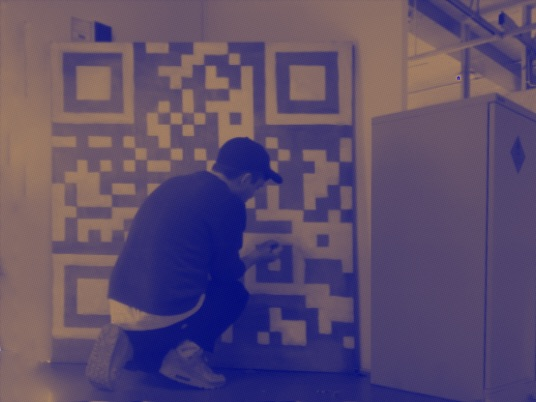

Christy Taylor is an artist based in Hastings, UK. He completed an MA in Contemporary Art Practice at the Royal College of Art in 2024. His practice spans drawing, painting, sculpture, video and performance, alongside an ongoing series of digital drawings made on iPad.

Education
MA Contemporary Art Practice — Royal College of Art, 2023–24
BA (Hons) Fine Art, First-Class Honours — University of East London, 2020–23
Selected Group Exhibitions
2026
Machine as Collaborator — OBX, Hastings
2025
In Praise of Darkness — Unit 2, St Leonards-on-Sea
Economic Possibilities for Our Grandchildren — Wandsworth Fringe Art Festival, Holy Trinity Church, London
Present Voices — Electro Studios, St Leonards-on-Sea
Bottle Alley Art Market — Hastings
Battenberg III — University of East London
2024
Tate Lates — Tate Modern, London
CAP Cinema Screening — Genesis Cinema, London
Future Archaeologies — Camden Art Centre, London
CosmiKnot — Platform, Athens, Greece
Uneasy in the Frame — Safehouse 1, Peckham
Battenberg II — University of East London
Mouthwash and Razorblades — The Place, London
2023
Soft Air — FILET, London
CosmiKnot — Platform, Athens, Greece
No Man’s Land — Dyson Gallery, Royal College of Art
Everything Must Go — Cookhouse Gallery, Chelsea College of Arts
2022
Soft Teeth — AVA Building, University of East London
Memories — Nunnery Gallery, London
35/4 — A.P.T Gallery, London
2019
SCULPT 2 — The Bomb Factory, London
2018
Plastic — Ex-Room, Copenhagen, Denmark